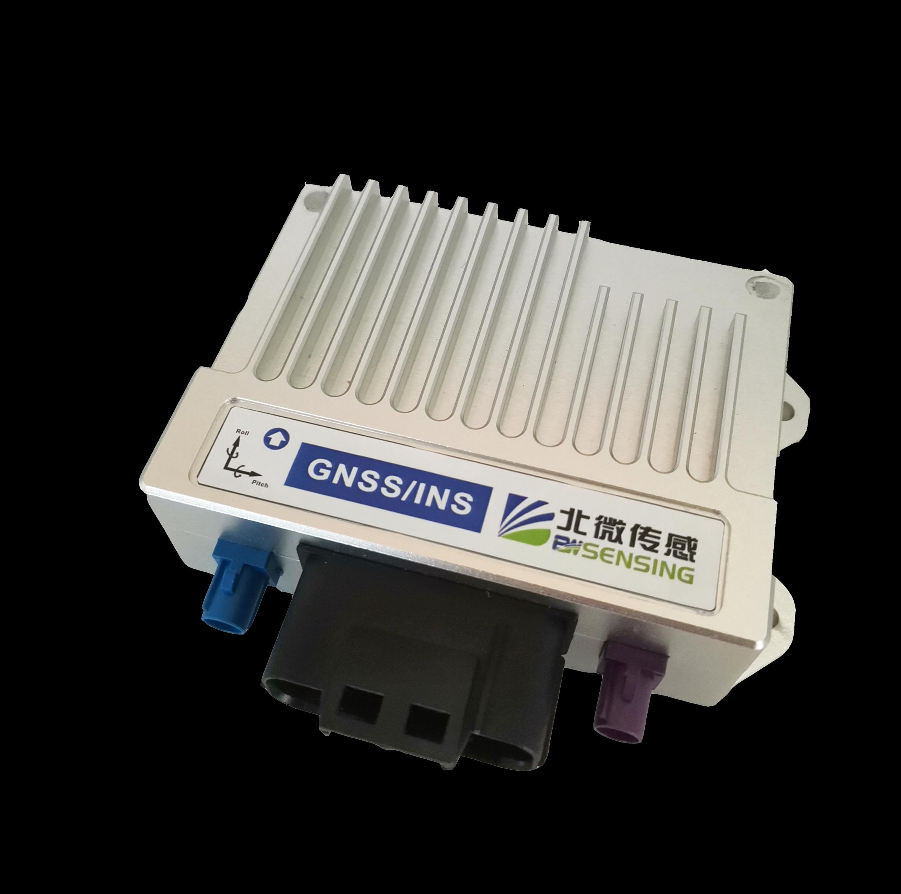

Common public driving datasets
- Strong on perception benchmarks
- Often centered on manually driven data collection
- Less suited for system-level AV evaluation
Production Autonomous Vehicle Evaluation
A real-world end-to-end dataset designed for system-level evaluation of driving safety and reliability beyond perception-only benchmarks.
The current release provides a selected academic subset collected under identified autonomous driving mode with synchronized sensors and high-precision localization.
Overview
Existing datasets such as KITTI, nuScenes, Waymo, Argoverse, and SemanticKITTI mainly support perception tasks, while most are collected from manually driven vehicles.
PAVE is designed to close that gap with real-world logs captured under autonomous driving mode, enabling holistic evaluation of intelligent driving behavior, safety events, and trajectory quality.
What's Included
Frame-level synchronized camera data for visual analysis and downstream benchmarking.
Continuous recordings for short-sequence and long-session evaluation workflows.
High-precision localization signals for trajectory reconstruction and temporal alignment.
Structured sensor metadata to support coordinate transforms and reproducible processing.
Material for behavior analysis, scenario understanding, and evaluation benchmark design.
Highlights
The current release is organized to support non-commercial research, method development, and scientific publication around autonomous vehicle evaluation.
Real-world driving logs collected with autonomous driving engaged rather than purely manual operation.
Supports safety and reliability analysis beyond isolated perception metrics.
Designed for AV behavior understanding, trajectory evaluation, and benchmark construction.
Synchronized sensor streams and localization records make temporal alignment a first-class capability.
Faces and license plates are anonymized in accordance with privacy and compliance requirements.
Suitable for academic evaluation, reproducible experiments, and future devkit expansion.
Sensor Setup
PAVE combines front and side cameras with GI320 GNSS/IMU hardware and GNSS NMEA plus PPS timing alignment to support consistent cross-modal analysis.

One wide-angle camera and one narrow-angle camera for complementary near-field and long-range observation.
Left and right cameras extend lateral coverage for scenario understanding and synchronized playback.
RTK-capable localization and inertial sensing provide the temporal and geometric backbone of the release.
GNSS NMEA messages and PPS are used to achieve sub-millisecond alignment across modalities.
Access
This repository currently releases a selected academic subset for non-commercial research, method development, and scientific publication.
Download the currently released academic subset and explore the repository documentation.
The release is governed by the PAVE Academic Non-Commercial License v1.0.
For full-dataset access, commercial licenses, industrial evaluation services, or extended annotations and benchmarks:
kema@hkust-gz.edu.cnCitation
Citation is a formal requirement for any research output that uses this dataset, even partially.
@article{Li2025PAVE,
title = {PAVE: An End-to-End Dataset for Production Autonomous Vehicle Evaluation},
author = {Xiangyu Li and Chen Wang and Yumao Liu and Dengbo He and Jiahao Zhang and Ke Ma},
journal = {arXiv preprint arXiv:2511.14185},
year = {2025}
}Contact
Please reach out for full dataset access, licensing clarification, extended benchmarks, or industry collaboration around autonomous vehicle evaluation.